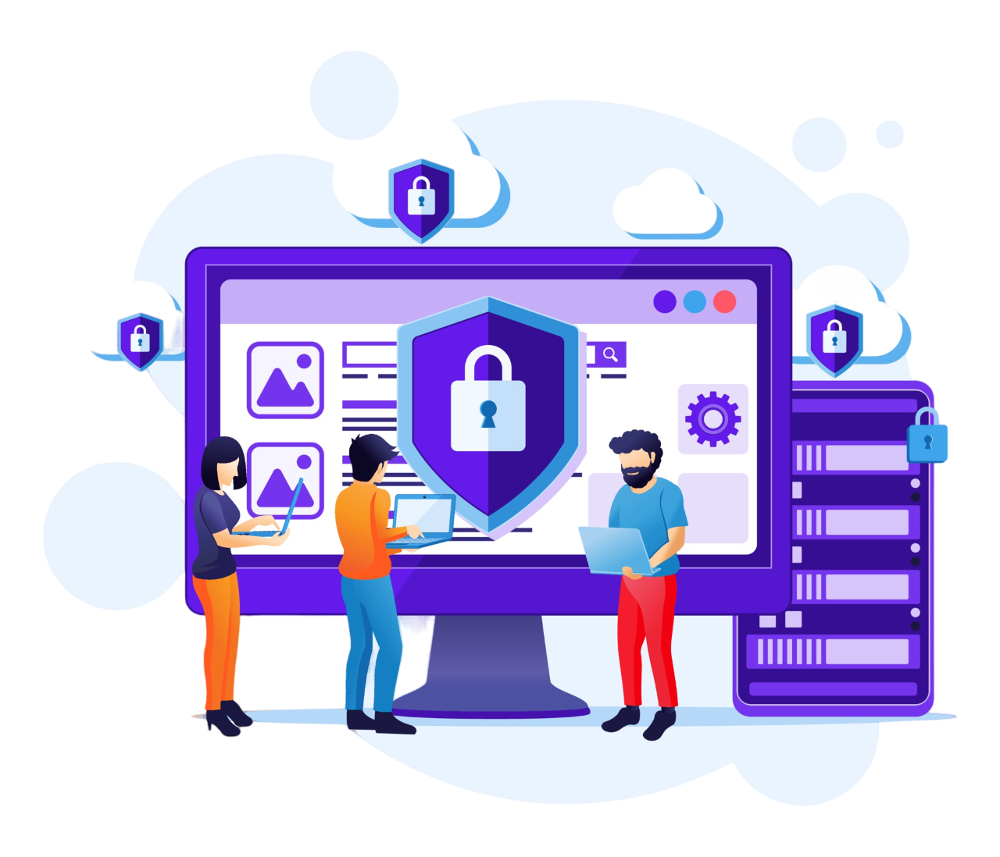

В современном мире Интернет стал незаменимым помощником каждого человека для решения различных задач, включая обучение, работу, общение, развлечения и другие. Но при стремительном развитии глобальной сети Интернет, информационная безопасность становится все более актуальной проблемой. Особенно это касается детей, которые могут столкнуться с различными угрозами в сети Интернет. Это связано с тем, что в настоящее время все больше детей выходят в сеть Интернет с целью учиться, играть в игры, общаться со сверстниками и так далее. Однако, Интернет также может быть опасным местом для детей. Таким образом возникает необходимость обеспечения безопасности информации, которую дети получают и передают в сети. Этого легко добиться, если соблюдать простые правила безопасности в пользовании сетью Интернет.
Общие рекомендации для детей
- Никогда не отправляйте личные данные электронной почтой, используйте только надежные и защищенные порталы.
- Избегайте общения с незнакомцами в Интернете.
- Храните свои данные в зашифрованном формате: если вы храните свои личные данные на компьютере, используйте программы для шифрования данных.
- Ограничьте доступ к своим социальным сетям: выбирайте сервисы с настройками контроля, чтобы ограничить информацию, которую другие пользователи могут видеть в вашем профиле.
- Регулярно меняйте свои пароли и логины на сайтах: чаще меняйте свои личные данные в Интернете, чтобы предотвратить их явную угрозу безопасности.
Рекомендации для родителей
Безопасность в социальных сетях
- Настройте приватность профиля вашего ребенка, чтобы только друзья могли видеть его контент.
- Объясните детям, что такое социальные сети и как они работают.
- Объясните своему ребенку, что он не должен публиковать личные данные (имя, фамилию, адрес, номер телефона) в социальных сетях.
- Учите детей быть осторожными при выкладывании личной информации в социальных сетях, особенно на незнакомых сайтах.
- Общайтесь со своим ребенком о том, на какие группы и сообщества он подписан в социальных сетях.
Безопасность в компьютерных играх
- Убедитесь, что игра подходит для возраста вашего ребенка.
- Общайтесь с ребенком о рисках азартных игр и объясните, почему они могут быть опасными.
- Убедитесь, что ваш ребенок не добавляет незнакомых людей в свой список друзей в игре.
- Обучите ребенка умению распознавать рекламу азартных игр и игровых сайтов.
- Общайтесь со своим ребенком о том, в какие игры он играет, следите за его активностью в игре.
Зашита от фишинга
- Обучите ребенка умению распознавать подозрительные электронные письма, сообщения и ссылки.
- Установите программы для блокировки нежелательной рекламы и спама, которые могут содержать ссылки на фишинговые сайты.
- Проверяйте и контролируйте активность ребенка в интернете, чтобы убедиться, что он не попал на фишинговые сайты.
Защита от кибер-преступлений
- Обучите ребенка видеть отличия между реальными друзьями и онлайн-знакомыми, которые могут попытаться получить его личные данные.
- Не разрешайте публиковать личную информацию или фотографии других людей без их разрешения.
- Не разрешайте отправлять личную информацию через электронную почту или мессенджеры.
Борьба с интернет-зависимостью
- Установите ограничения на время, которое ребенок проводит в интернете.
- Обучите ребенка использовать интернет для конкретных целей, таких как поиск информации или общение с друзьями.
- Организуйте другие виды досуга, такие как чтение книг, занятия спортом или творческие хобби.
- Обучите ребенка умению управлять своими эмоциями и стрессом, чтобы он не обращался к интернету в качестве способа справиться с проблемами.
Защита от нежелательного контента
- Настройте поисковые системы на безопасный режим, установите фильтры контента на устройствах, которые использует ребенок.
- Обучите ребенка умению использовать безопасные браузеры и поисковые системы, которые блокируют нежелательный контент.
- Обучите ребенка, как отличить нежелательный контент от полезного.
Безопасность покупок в интернет-магазинах
- Научите ребенка проверять достоверность интернет-магазинов, на которых он собирается приобретать ту или иную продукцию.
- Проверьте отзывы других пользователей и убедитесь, что сайт имеет SSL-сертификат, который гарантирует безопасность передачи данных между сайтом и пользователем.
- Проверьте, есть ли на сайте политика конфиденциальности и условия использования. Если эти документы отсутствуют, это может быть признаком поддельного магазина.
- Проверяйте сайты на оригинальность.
Взрослые и сами дети должны осознавать опасности, которые подстерегают их в Интернете, и следовать правилам безопасности, быть осторожными в своих действиях в сети. Однако, помимо этих мер, необходимо постоянно отслеживать изменения в области информационной безопасности, следить за новыми угрозами и искать инновационные средства защиты информации. Таким образом, вместе с усилием правительства, общественности и общественных организаций, можно создать безопасное и защищенное виртуальное пространство для детей, где они смогут получать информацию, общаться и развиваться безопасно и свободно. Обезопасить детей в Интернете необходимо, чтобы предотвратить негативные последствия и защитить ребенка от опасностей.